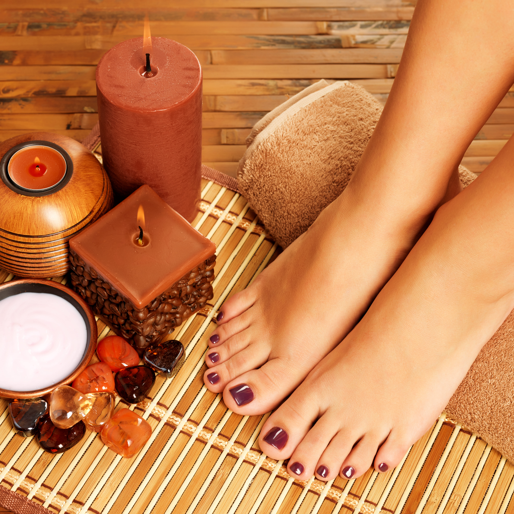

Spa dos pés: o que é
É um tratamento para hidratar e relaxar a região dos pés.
Os pés não têm muitas glândulas e portanto não se hidratam sozinhos. Por isto é muito importante regularmente fazer um spa dos pés com hidratação profunda para obter esse beneficio. É realizada uma seqüência de massagens para relaxar as tensões do dia a dia e aliviar o cansaço dos pés com tratamento de profunda hidratação. Primeiro é feito um escalda pés com folhas aromáticas, sal grosso e água morna para soltar e relaxar a musculatura dos pés, em seguida uma massagem com um creme esfoliante para eliminar as células mortas e promover a renovação celular. Logo após é realizada a aplicação da máscara de parafina envolvendo em botas térmicas para manter o calor e fazer com que o produto penetre. Para finalizar é feita uma massagem relaxante.
5 benefícios do spa dos pés
- Proporciona relaxamento:
- Atua na circulação sanguínea:;
- Alivia as dores:
- Promove muita maciez:.
- Alivia as calosidades